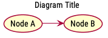

PlantUML
Table of Contents
1 General
1.1 Base
@startuml // Params // UMLs @enduml
1.2 Comment
' Single-line comment /' Block comment '/
1.3 title

title Diagram Title (Node A) -> (Node B)
1.4 note
1.4.1 Syntax
// Directly below an entity
<style> note <side> : <text>
<style>
floating // Available in activity diagram
1.4.2 Example

(Node A) note left : This is a node (Node B) note right : This is another node
2 Sequence
2.1 Participants
2.1.1 Syntax
<type> <name> <options>
<name>
// Single word doesn't need ""
// Multiple words, or name containing non-letter characters need to be wrapped in ""
// Insert line breaks with "\n"
<options>
as <alias>
<bg_color>
<color_name> // E.g. #red
<color_hex> // E.g. #FFFFFF
order <int> // Custom order, otherwise sorted by declaration order
<type>
participant // Default type, can be skipped
actor
boundary
control
entity
database
collections
2.1.2 Example

participant A participant "Participant with\nlong name" as B actor Actor #red boundary Boundary #FFFFFF control Control entity Entity database Database collections Collections
2.2 Messages
2.2.1 Syntax
<name>|<alias> <arrow> <name>|<alias> : <message>
<name>|<alias>
// Can be the same participant, to send message to itself
<arrow>
<line>
- // Solid line
-- // Dotted line
<head>
left right
< > // Normal
<< >> // Thin
/ \ // Upper half
\ / // Lower half
// \\ // Thin upper half
\\ // // Thin lower half
x< >x // Change arrow to cross (lost message)
o< >o // Add circle, can combine with other styles
<direction>
-> etc. // Unidirection
<-> etc. // Bidirection
<message>
// Insert line breaks with "\n"
2.2.2 Example 1

actor User participant Service User -> User : Message\nto self User -> Service : Message to other participant User <- Service User --> Service User <-- Service
2.2.3 Example 2

participant "Participant A" as A participant "Participant B" as B A -> B A ->> B A -\ B A -/ B A -\\ B A -// B A ->x B A ->>o B A o//-//x B
3 Work Breakdown Structure
3.1 Syntax
+ <Name> + <Name> // Each level indents 1 space + <Name> // Branch to right - <Name> // Branch to left + <Name> +_ <Name> // Branch to right, boxless -_ <Name> // Branch to left, boxless
3.2 Example

@startwbs + Project + Part One + Task 1.1 - Task 1.2 + Task 1.3 + Part Two + Task 2.1 + Task 2.2 -_ Task 2.2.1 To the left, boxless -_ Task 2.2.2 To the left, boxless +_ Task 2.2.3 To the right, boxless + Part Three @endwbs
4 Graphviz DOT
4.1 Syntax
@startdot
diagraph <Name> {
...
}
@enddot
5 Params
skinparam defaultFontName "<Font Name>" skinparam defaultFontSize <int> skinparam monochrome <bool> skinparam shadowing <bool>
6 Install
brew install graphviz brew install plantuml